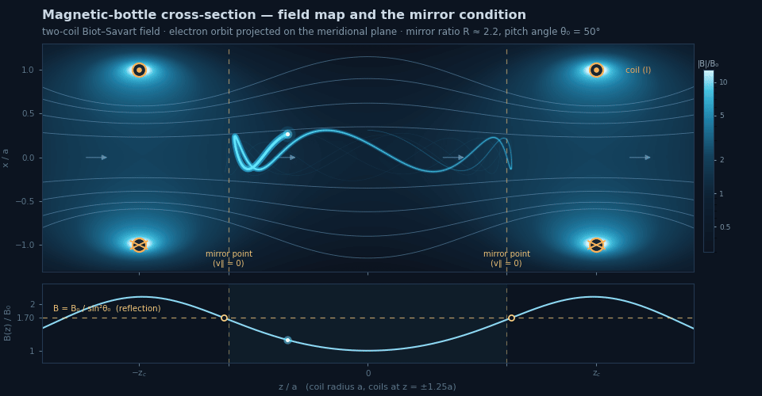

Charged-particle dynamics · Magnetic traps
Magnetic-mirror particle traps & charged-particle dynamics
A magnet system is ultimately judged by what it does to a charged particle. I trace electron dynamics in magnetic-lens systems with an in-house particle-tracing code — a volume-preserving Boris pusher in the exact Biot–Savart field of the coils — applied here to the magnetic-mirror trap (“magnetic bottle”), a basic building block of plasma confinement and magnetic electron optics.


The physics
The electron’s rapid gyration makes its magnetic moment μ = mv⊥²/2B an adiabatic invariant: as B grows toward a coil, v⊥ must grow with it, and — the magnetic force doing no work — v∥ is exhausted. Reflection occurs where B = B₀/sin²θ₀ (θ₀ — the mid-plane pitch angle); particles inside the loss cone, sin²θlc = 1/R, here θlc ≈ 43°, escape through the mirror throat. The orbit shown is deliberately fat to keep the gyration visible, so μ wanders by ~10%; at a gyroradius of 0.05a it tightens to ~1.5%.
The model
The coil field is evaluated in closed form (complete elliptic integrals), so the field and its gradients are exact even near the wires. Trajectories are advanced with the Boris algorithm, the volume-preserving pusher of particle-in-cell plasma codes; in a static magnetic field it conserves kinetic energy to machine precision (~10⁻¹⁴ here). The same pusher runs on COMSOL-computed or measured field maps — and live in the browser below.
Interactive simulation — fly the trap yourself
The same Boris pusher and two-coil field, integrated live in the browser (WebGL). Push the pitch angle below the loss cone (≈43°) and the electron escapes.
Gyration, mirror reflection where v∥ → 0, and a live readout of the (approximately conserved) invariant μ. If WebGL is unavailable, the animations above show the same physics.
From model to hardware
The same Lorentz-force integration underpins the compact IFEL accelerator work and connects to the applied-magnetism projects — the fields being designed are the fields particles must fly through. Mirror-type magnetic lenses are building blocks of electron sources, beam-transport lines, and plasma-confinement devices.